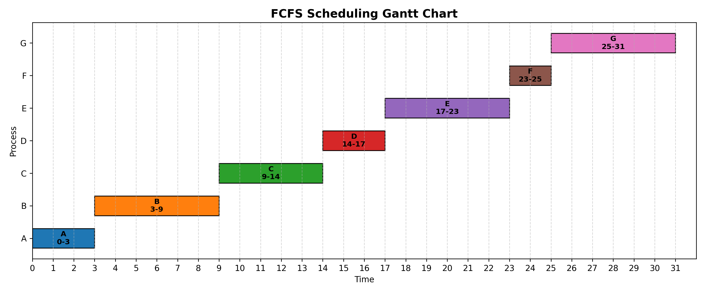
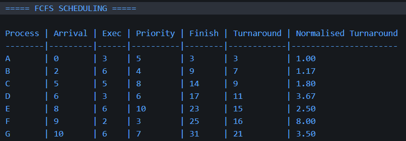
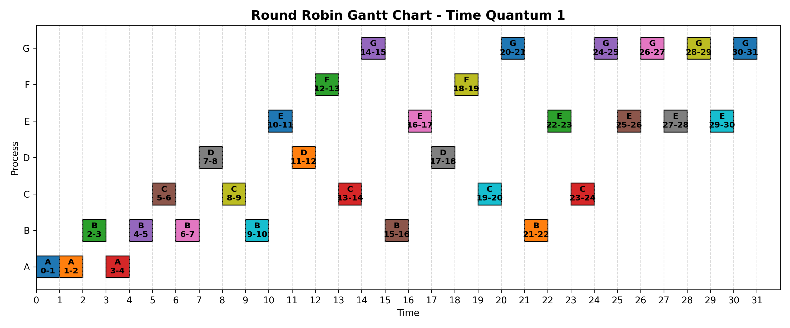
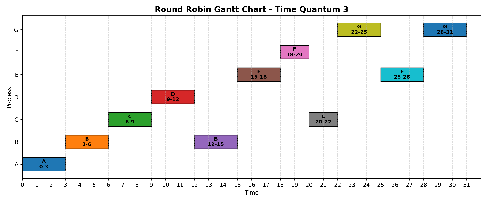
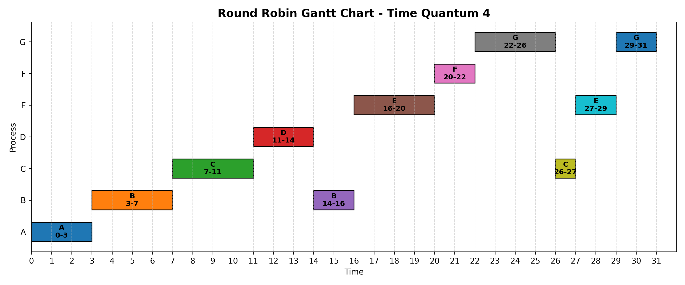
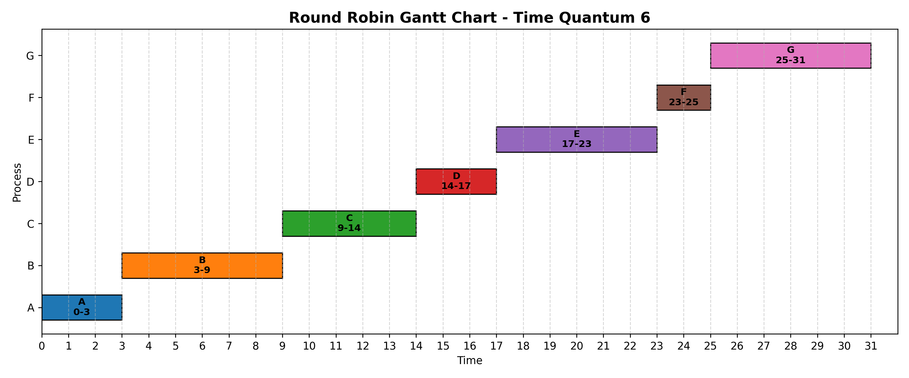
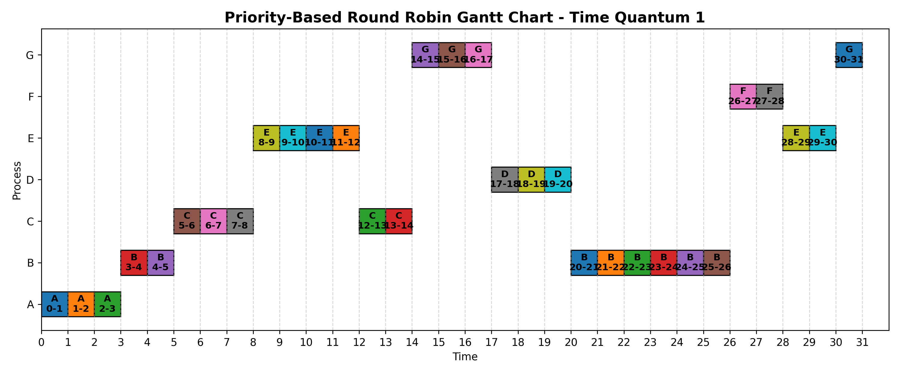
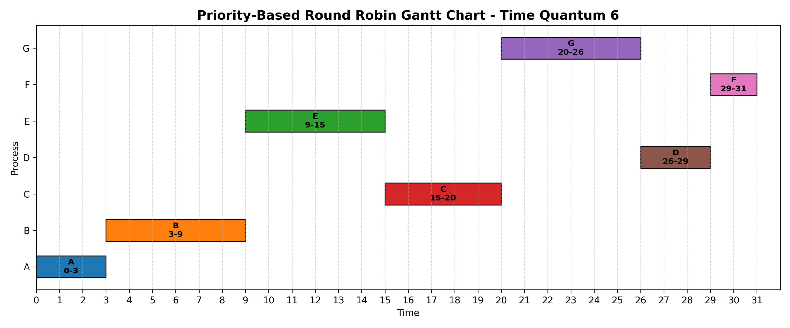

OS Scheduling Lab
Introduction
This lab focused on CPU scheduling in operating systems. Scheduling is used to decide which process should use the CPU at a particular time. I implemented long-term scheduling, First-Come-First-Serve scheduling, Round Robin scheduling, and priority-based Round Robin scheduling.
I used C# to calculate the scheduling results and matplotlib to create visual Gantt charts. The Gantt charts show when each process is allocated CPU time.
Section 1: Long-Term Scheduling
Long-term scheduling decides which jobs are admitted into the system. In my program, I filtered the jobs based on priority. Jobs with priority greater than 5 were admitted.
| Process | Arrival Time | Execution Time | Priority |
|---|---|---|---|
| A | 0 | 3 | 5 |
| B | 2 | 6 | 4 |
| C | 5 | 5 | 8 |
| D | 6 | 3 | 6 |
| E | 8 | 6 | 10 |
| F | 9 | 2 | 3 |
| G | 10 | 6 | 7 |
The admitted jobs were C, D, E and G because their priorities were greater than 5. This shows how long-term scheduling can control which jobs enter the system.

Section 2: FCFS Scheduling
First-Come-First-Serve scheduling runs processes in the order that they arrive. It is simple to implement, but it can cause shorter jobs to wait behind longer jobs.
Turnaround Time = Finish Time - Arrival Time
Normalised Turnaround Time = Turnaround Time / Execution Time
In my FCFS implementation, the processes were executed in arrival order: A, B, C, D, E, F and G.
| Process | Arrival | Execution | Finish | Turnaround | Normalised Turnaround |
|---|---|---|---|---|---|
| A | 0 | 3 | 3 | 3 | 1.00 |
| B | 2 | 6 | 9 | 7 | 1.17 |
| C | 5 | 5 | 14 | 9 | 1.80 |
| D | 6 | 3 | 17 | 11 | 3.67 |
| E | 8 | 6 | 23 | 15 | 2.50 |
| F | 9 | 2 | 25 | 16 | 8.00 |
| G | 10 | 6 | 31 | 21 | 3.50 |
FCFS Gantt Chart

The FCFS Gantt chart shows that each process runs once, in arrival order. There is no interruption once a process has started.

Section 3: Round Robin Scheduling
Round Robin scheduling gives each process a fixed time slice called a time quantum. If the process does not finish during that time slice, it returns to the ready queue and waits for another turn.
I tested Round Robin with time quantum values of 1, 3, 4 and 6. A smaller time quantum gives processes more frequent turns, but it increases context switching. A larger time quantum reduces switching but behaves more like FCFS.
Round Robin Gantt Chart - Time Quantum 1

Round Robin Gantt Chart - Time Quantum 3

Round Robin Gantt Chart - Time Quantum 4

Round Robin Gantt Chart - Time Quantum 6

The Gantt charts show that smaller time quantum values split processes into more CPU bursts. For example, time quantum 1 creates many short executions, while time quantum 6 creates fewer interruptions.
Section 4: Context Switching and Priority-Based Round Robin
I extended the Round Robin simulation to include priority-based scheduling. In this version, higher-priority processes are selected before lower-priority processes.
This demonstrates how an operating system can combine fairness with priority. Round Robin gives processes time slices, while priority scheduling gives more important processes earlier access to the CPU.
Priority-Based Round Robin Gantt Chart - Time Quantum 1

Priority-Based Round Robin Gantt Chart - Time Quantum 6

The priority-based charts show that higher-priority processes such as E, C and G are selected earlier. This affects the finish times and turnaround times compared with normal Round Robin.
Reflection
This lab helped me understand how operating systems decide which process should use the CPU. FCFS is simple and runs jobs in arrival order, but it can cause long waiting times. Round Robin is fairer because each process receives a time slice, but smaller time slices increase context switching.
This could be used in industry because servers, cloud systems and desktop computers often run many processes at the same time. CPU scheduling helps improve fairness, responsiveness and system performance.